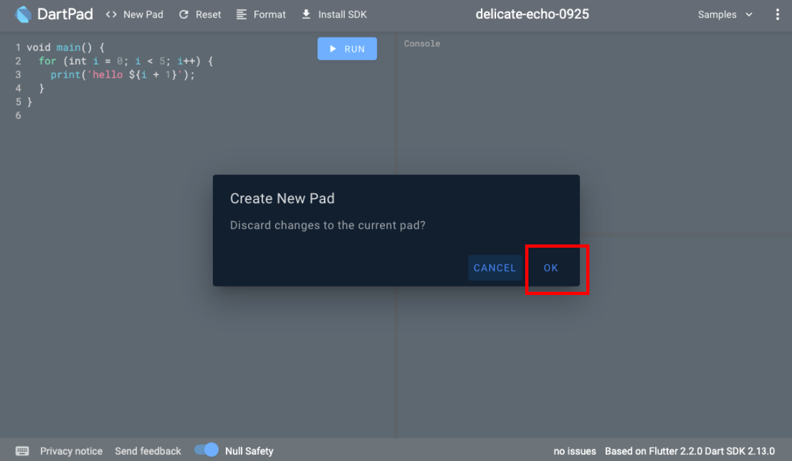

What You'll Build in this Workshop:
- A simple, but well-architected Flutter Application, consisting of: Splash Page, Landing Page, Details Page, Shopping Cart, Favorites Page.
- Create Flutter User interfaces with ease
- Common Flutter Layout strategies using just core widgets
- Creating custom Flutter widgets and achieve widget composition
- Creating Dart models to mock up app data
- Import network images
- Using Material Icon fonts
- State Management using Provider to decouple Business Logic of Components (BLoC)
- Animations in Flutter using core Animated Widgets and Tweens
- Stateful and Stateless Widgets
- A computer with a browser
- An internet connection
For the Coding Roulette Session:
- We'll be using LiveShare, a web-based VS Code plugin for real-time collaborative development.
DartPad will be our Flutter development editor, so let's set it up for that.
First, go to a browser and launch dartpad.dev. Your browser should look as follows:

Setting up DartPad for Flutter Development
By default, DartPad is set up for Dart development. For Flutter development, do the following steps:
- From the top menu, select New Pad.

- If prompted to discard changes of the current pad, click OK.

- From the New Pad dialog, select Flutter. Click Create.

You should be all set! Now you're ready to start coding in Flutter right from your browser. If you hit the Run button, you will see the generated output on the right panel.

Are you ready? Let's go to the next step!
For the initial page in this application, we'll be building the Splash Screen.
This is what we'll be accomplishing in this codelab:
Splash Screen and its widget composition
The following illustration shows a schematic view of the widget composition we'll accomplish while building the layout for our splash screen widget:
Start Coding the App
Let's start coding this application from scratch. Remove all code from the editor and leave just the following code:
import 'package:flutter/material.dart';
void main() {
// TODO: more code here later
}
We are importing the Material Library Flutter package and like every Flutter app, the main entrypoint is the main method. Inside this method is where things kick off. We'll get back to this point in a minute.
Inside the main method, add the following code:
// add this code inside your void main():
runApp(
MaterialApp(
debugShowCheckedModeBanner: false,
home: SplashPage()
)
);
The runApp method is part of the Flutter framework and is in charge of mounting the root widget on the widget tree. We create the first widget (MaterialApp) which represents the application's root widget.
We disable the debugging sash by setting the debugShowCheckedModeBanner to false, and set the home property of the MaterialApp widget to be our SplashPage widget, which we'll create in a moment.
Let's create the SplashPage Widget.
Right under the main method, create a StatelessWidget called SplashPage. We create it as Stateless since we won't be maintaing state at the moment. More info on StatelessWidgets here.
Since every widget has a build method, add one, and return a Scaffold widget. We are using a Scaffold widget since it's a kind of widget that implements the basic material design visual layout structure and it is a convenient way to start as the foundation of a full-blown page as it allows to add other core components to it (i.e. AppBar, Drawer, BottomBar, etc.).
Set its backgroundColor property to a color that later we'll use it as our main theme color:

The output of that would look like this:
Before We Proceed Further...
We need to pull in some pre-defined static data (images, colors, etc.) that we'll use throughout the application, and for convenience, we've pre-packaged them all into a simple convenient utility class called Utils, that contains the static data to be used as static variables, since this data won't change.
Go ahead and copy this class at the bottom of the file. We'll add other properties to it, but this is a good starting point:
class Utils {
static const Color mainColor = Color(0xFFFF0F7E);
static const Color mainDark = Color(0xFF980346);
static const String donutLogoWhiteNoText = 'https://romanejaquez.github.io/flutter-codelab4/assets/donut_shop_logowhite_notext.png';
static const String donutLogoWhiteText = 'https://romanejaquez.github.io/flutter-codelab4/assets/donut_shop_text_reversed.png';
static const String donutLogoRedText = 'https://romanejaquez.github.io/flutter-codelab4/assets/donut_shop_text.png';
static const String donutTitleFavorites = 'https://romanejaquez.github.io/flutter-codelab4/assets/donut_favorites_title.png';
static const String donutTitleMyDonuts = 'https://romanejaquez.github.io/flutter-codelab4/assets/donut_mydonuts_title.png';
static const String donutPromo1 = 'https://romanejaquez.github.io/flutter-codelab4/assets/donut_promo1.png';
static const String donutPromo2 = 'https://romanejaquez.github.io/flutter-codelab4/assets/donut_promo2.png';
static const String donutPromo3 = 'https://romanejaquez.github.io/flutter-codelab4/assets/donut_promo3.png';
}
Ok - Back to the SplashPage widget. Replace the hard-coded color as the backgroundColor property of the Scaffold and use the predefined Utils.mainColor instead:
No difference should be noticed. It's mostly the convenience. Let's proceed by adding a few images to it. We want to add two Image widgets (we'll use Image.network since we'll pulling images from the internet); they will be laid out vertically (using a Column widget), centered inside the body property of a Scaffold, as follows:

This is the output of the code above:
You need to vertically align the images inside the Column widget, therefore proceed to apply the mainAxisAlignment and crossAxisAlignment to Center respectively:
Now they should be centered:
Before adding the splash screen simulation, we want to create a dummy landing page, to which our splash screen should navigate after the delay.
Create Dummy Landing Page
We'll create a widget page called DonutShopMain which will represent the landing / main page of this application. For now we'll create it as a placeholder for the splash screen to redirect to, but we'll further define it on later codelabs.
Create a Stateless widget class called DonutShopMain, and as every custom widget, override the build method that just returns a simple Scaffold with a Text widget wrapped inside a Center widget as its body; add the text "Hello Donut Shop" to the Text widget, as follows:
With that in place, let's proceed with the next step, which is introducing a delay on the Splash Page which then will trigger a navigation action to this sample page. Let's go!
Let's proceed now to add the behavior of a splash screen by introducing a small delay, which will lead to the app navigating to the next page.
So what we'll do now is simulate a delay in the Splash Page, then navigate to our main page. For that we'll make use of a Future, which is an object that represents a delayed computation. More on Futures here.
Back in our SplashPage widget, let's add a Future, and use one of the provided methods called delayed. This method takes a duration, and a callback, which gets executed once the duration (or delay) has ellapsed. We'll set a duration of 2 seconds, and when this time has ellapsed, it will execute our callback, which in turn will perform a Navigation to our list page.
Add a Future.delayed inside the SplashPage widget's build method, right above the return statement, as such:
Let's dissect this code. Future.delayed takes two parameters: a Duration object with is seconds property set to 2, and a callback. When the 2 seconds have ellapsed, it will call the callback.
The callback has inside a trigger to perform a navigation. We use Navigator.of to push a new route to the global navigation stack, using the BuildContext context to retrieve the closest navigator in the hierarchy, in our case, the one available by default from the MaterialApp. We use a MaterialPageRoute to wrap the widget we want to navigate to, in our case the DonutShopMain widget page created earlier.
Now, let's take our current implementation for a spin with what we have so far.
In DartPad, click Run. After a 2 seconds delay, you should see the SplashSpage widget slide out of view and sliding in comes the DonutShopMain widget, which will be our landing page for now.
Congrats in making it this far! In this codelab, we accomplished the following:
- Performed the initial setup of our DartPad environment
- Created our initial boilerplate startup code
- Created a SplashScreen widget with core widgets
- Created a dummy landing page (DonutShopMain) for the SplashPage widget to navigate to
- Introduced Futures to add a small delay before proceeding further
- Tapped into the navigation capabilities of Flutter
In the next codelab, we'll flesh out the DonutShopMain widget and learn more about creating custom widgets. See you there!
Please don't forget to follow me on social media:
- On Twitter (@drcoderz)
- On YouTube (Roman Just Codes)
- On My Personal Portfolio
- On Medium
- On LinkedIn
We'll add some animations to the splash screen by making the donut logo rotate indefinitely in place.
Well-designed animations make a UI feel more intuitive, contribute to the slick look and feel of a polished app, and improve the user experience. Flutter's animation support makes it easy to implement a variety of animation types. More on Flutter animations here;
Convert the Splash Page into a StatefulWidget
Whenever you want to add interactivity to your widgets (changes in its state, animations), they must inherit StatefulWidget, and implement two classes: a subclass of StatefulWidget and a subclass of State.
Let's do it as a 3-step process:
- Create a class right under the the existing SplashPage widget, and call it SplashPageState (the norm is to call the State class the name of the main widget + the word "State" at the end). Make it extend State<SplashPage>
- Move the build method from the SplashPage widget to the newly created SplashPageState widget
- The SplashPage widget, which currently inherits StatelessWidget, make it so it inherits StatefulWidget; override the createState method and make it return an instance of type SplashPageState. See code below:

We will be adding an explicit animation transition to this widget. Explicit animations are a set of controls for telling Flutter how to rapidly rebuild the widget tree while changing widget properties to create animation effects. This approach enables you to create effects that you can't achieve using implicit animations.
The AnimationController is a special Animation object that generates a new value whenever the hardware is ready for a new frame. All explicit animations require an AnimationController.
In the SplashPageState class, add the SingleTickerProviderStateMixin mixin, which will provide this class with the Ticker instance it needs; an AnimationController needs a TickerProvider — the AnimationController constructor takes a required parameter vsync that must implement a TickerProvider interface, therefore we are implementing SingleTickerProviderStateMixin on this class so it serves as the AnimationController's ticker provider.
Inside the SplashPageState, at the top, let's add two properties, one called donutController type AnimationController, and another one called rotationAnimation type Animation<double>.
In this same SplashPageState, override the initState method; in this method is where you usually initialize things; this method is called once when this widget gets mounted on the widget tree.
Inside this method, start by calling super.initState(), followed by instantiating the donutController and assigning an instance of AnimationController, which takes two parameters:
- const Duration(seconds: 5))
- vsync: the instance of the Ticker provider; in this case, the existing instance (this) since we are implementing the SingleTickerProviderStateMixin. Follow the instantiation by quicky executing its repeat method by using the spread operator (the two dots right after the instance; i.e. ..repeat()). What this does is allow the animation to repeat in an infinite loop. We'll explore other options of the AnimationController later in this series, or you can follow this link.
Right after, instantiate the rotationAnimation using a (Tween)[https://api.flutter.dev/flutter/animation/Tween-class.html] animation, which is nothing but an animation between two values (begin and end). Since we are feeding a value that changes between two values (a range) over a period of time along a curve, we instantiate it as follows:
- begin: the value when to start the rotation (i.e. 0)
- end: the value when to end the rotation (i.e. 1)
Then call its animate method right away, passing the exising AnimationController called donutController and an existing Curve value (Curves.linear). See code below:
Now, let's apply this animation to our logo image - the first Image widget inside our Column widget, by wrapping it inside a RotationTransition widget. The RotationTransition widget is one of the explicit animation widgets available in Flutter. Aside from setting the Image widget as the child of the RotationTransition widget, set its turns property to the rotationAnimation animation we created earlier, which supplies the Tween animation between the two points (the rotation) over a period of time (the duration supplied by the AnimationController) at the right frame (provided by the ticker provider, the State class itself):
When dealing with AnimationController objects, since they take up precious resources during their execution, it is best practice to always dispose of them, and the way to do it is, well, calling dispose() on them, which deallocates resources used by it.
Override the dispose method of the State class (SplashPageState) - just like the initState(), and then call donutController's dispose() method, followed by a call to the super.dispose() method, to denote this method is being overriden but still continue disposing of this widget as normal:
Final Product ###:
The final product should look like this:
And with that, we've implemented a simple rotation animation, which brings some interactivity and a nice touch to our splash screen, while being responsible and cleaning up after ourselves ;). You should be proud - things are taking a nice shape from the get-go!
In case you fell behind on this codelab, below is the whole code for this codelab in a way you can copy / paste directly into DartPad:
import 'package:flutter/material.dart';
void main() {
runApp(
MaterialApp(
debugShowCheckedModeBanner: false,
home: SplashPage()
)
);
}
class SplashPage extends StatefulWidget {
@override
SplashPageState createState() => SplashPageState();
}
class SplashPageState extends State<SplashPage>
with SingleTickerProviderStateMixin {
AnimationController? donutController;
Animation<double>? rotationAnimation;
@override
void initState() {
super.initState();
donutController = AnimationController(
duration: const Duration(seconds: 5),
vsync: this)..repeat();
rotationAnimation = Tween<double>(begin: 0, end: 1)
.animate(CurvedAnimation(parent: donutController!, curve: Curves.linear));
}
@override
void dispose() {
donutController!.dispose();
super.dispose();
}
@override
Widget build(BuildContext context) {
Future.delayed(const Duration(seconds: 2), () {
Navigator.of(context).pushReplacement(
MaterialPageRoute(builder: (context) => DonutShopMain())
);
});
return Scaffold(
backgroundColor: Utils.mainColor,
body: Center(
child: Column(
mainAxisAlignment: MainAxisAlignment.center,
crossAxisAlignment: CrossAxisAlignment.center,
children: [
RotationTransition(
turns: rotationAnimation!,
child: Image.network(Utils.donutLogoWhiteNoText, width: 100, height: 100),
),
Image.network(Utils.donutLogoWhiteText, width: 150, height: 150)
],
),
)
);
}
}
class DonutShopMain extends StatelessWidget {
@override
Widget build(BuildContext context) {
return Scaffold(
body: Center(
child: Text('Hello, Donut Shop!')
)
);
}
}
class Utils {
static const Color mainColor = Color(0xFFFF0F7E);
static const Color mainDark = Color(0xFF980346);
static const String donutLogoWhiteNoText = 'https://romanejaquez.github.io/flutter-codelab4/assets/donut_shop_logowhite_notext.png';
static const String donutLogoWhiteText = 'https://romanejaquez.github.io/flutter-codelab4/assets/donut_shop_text_reversed.png';
static const String donutLogoRedText = 'https://romanejaquez.github.io/flutter-codelab4/assets/donut_shop_text.png';
static const String donutTitleFavorites = 'https://romanejaquez.github.io/flutter-codelab4/assets/donut_favorites_title.png';
static const String donutTitleMyDonuts = 'https://romanejaquez.github.io/flutter-codelab4/assets/donut_mydonuts_title.png';
static const String donutPromo1 = 'https://romanejaquez.github.io/flutter-codelab4/assets/donut_promo1.png';
static const String donutPromo2 = 'https://romanejaquez.github.io/flutter-codelab4/assets/donut_promo2.png';
static const String donutPromo3 = 'https://romanejaquez.github.io/flutter-codelab4/assets/donut_promo3.png';
}